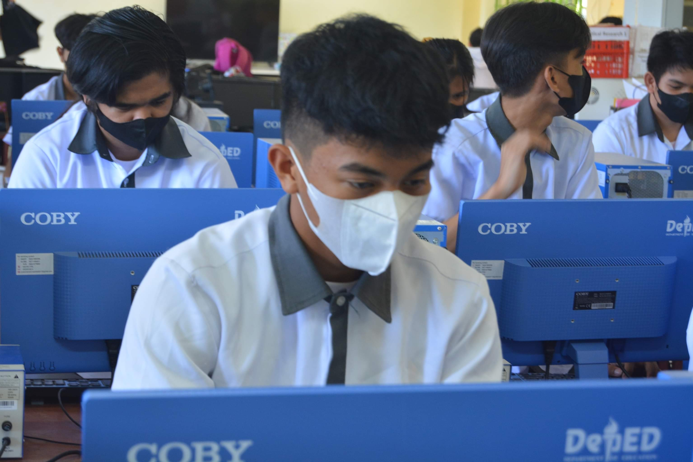

The ICT strand is best for students who want to take computer science and its related degrees in college. In fact, this is perfect for tech-savvy students who are fond of using technological tools to foster their skills. This TVL strand will enhance your skills in technical drafting, animation, and programming languages. You will learn how to write computer programs and design websites, too.
Under this strand, you can learn writing computer programs, illustrating, and designing websites. You will also be taking up technical drafting, animation, and java programming that would be essential if you are planning to work on creative technological field. Other subjects in the strand are medical transcription and telecom installation which are relevant to the telecommunications industry.
You can take different careers after taking the ICT strand. With the right set of skills and knowledge, you can take a job as a call center agent, a web designer, a data encoder, a radio technician, a graphic designer, or a junior programmer. You can also take up sales positions such as online sales agent and IT sales clerk.

If you are planning to continue your studies in college with this as your strand, you can take up electrical computer engineering, information technology, software and network engineering!